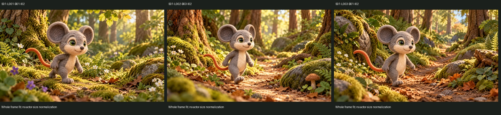
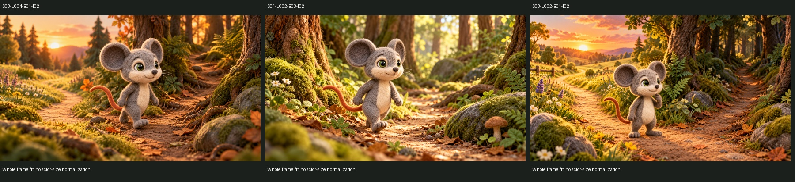
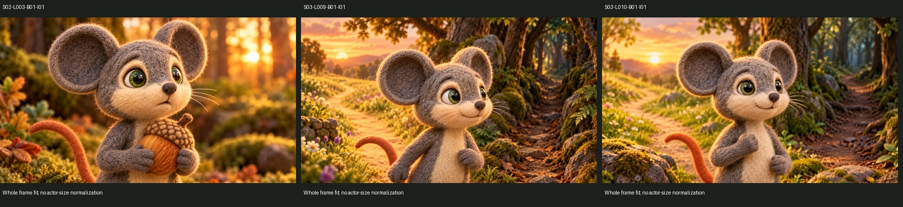
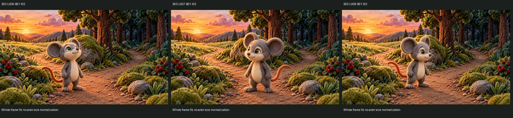

Landmarks ±15 px, not anatomy segmentation. Verdict controls are unsaved placeholders; no approval ledger is written.
Approved identity reference (identity scope only)
Walking
Compare complete frames at equal canvas scale. No common physical distance assumed across independent shots.

S01-L001-B01-I02
Once upon a time, at the edge of a wide and peaceful forest, there lived a little mouse who loved exploring.
suspected_defect: Bent/lifted trailing leg and more forward torso make this walker look shorter than the straighter winding-path walker. Head/body balance may differ, but oblique pose and unknown camera prevent a confirmed anatomy verdict. Short sturdy limbs and curved orange tail remain readable. Compare head-to-torso landmarks at matched head angle, not total pixel height; walking family proposal is three-quarter screen-right.
The mouse knew every berry bush, every hollow log, and nearly every winding path beneath the trees.
not_comparable: Three-quarter walker facing right, lifted forward foot and relatively upright torso. Appears longer-legged than L001, with different gait phase. Camera_unknown; do not normalize the entire mouse to one height to infer anatomy.
One afternoon, the mouse wandered farther from home than usual.
not_comparable: Right-facing explorer with two low visible feet and straighter upright posture than L001. Tail curves behind left. Shared lightstep family is plausible after view review. Independent environment/camera; physical size comparison unavailable.
Compare complete frames at equal canvas scale. No common physical distance assumed across independent shots.

S03-L004-B01-I02
The other was much shorter.
suspected_defect: Head/ears read large above narrow torso, but foreshortening and lifted forward step confound anatomical inference. The stepping silhouette also suggests entering the shortcut before the decision. Use stationary route-considering performance; camera_unknown, head-size defect remains suspected rather than confirmed.
The mouse knew every berry bush, every hollow log, and nearly every winding path beneath the trees.
not_comparable: Three-quarter walker facing right, lifted forward foot and relatively upright torso. Appears longer-legged than L001, with different gait phase. Camera_unknown; do not normalize the entire mouse to one height to infer anatomy.
not_comparable: Native PNG inspected: felt mouse/action or environment is visible. No defensible cross-shot anatomical measurement was established for this independent pose/framing. camera_unknown; retain pending owner review.
Compare complete frames at equal canvas scale. No common physical distance assumed across independent shots.

S02-L003-B01-I01
Oh! It's getting late!
confirmed_defect: Portrait ear clearance is minimal at the top edge (far-ear fuzz reaches the border region); full-head/ear margin needs review. Rounded muzzle, green eyes and closed mouth remain recognizable; no teeth seen. The face is larger because this is deliberately a portrait. Exact anatomy comparison with neutral canonical is not proven by the crop; expression-base inspiration only.
camera_explained: Portrait crop intentionally shows a much larger face/upper body than the fork wide shots; screen-size difference alone is not a defect. Background retains more detail than the requested strong blur. Camera distance is not measured; framing explains screen occupancy only, not a proof of anatomical identity.
camera_explained: Portrait with fuller ear margin and softer background than L009; slight determined/hopeful facial change, mouth closed, no teeth. Separate cut permits crop/scale change; still requires a compatible reviewed portrait-expression base.
Compare complete frames at equal canvas scale. No common physical distance assumed across independent shots.

S03-L006-B01-I02
The mouse looked at the darkening sky.
confirmed_defect: Compared with L007/L008, foot/root placement changes in the same fixed-camera fork setup. Full body is left of L007 and head angles up. Confirmed contract failure: shared root/contact not retained. Head projection changes with gaze; anatomical resizing remains suspected, not measured as physical truth.
confirmed_defect: Actor is substantially farther right than L006/L008; ear-to-foot extent grows. Gaze/body angle turns left. Root shift is confirmed under declared lock; size suspicion needs head-angle-aware measurement. Background pixel lock fails in top ROI.
confirmed_defect: Actor moves back left and feet sit higher on the canvas than L007; gaze turns right. Root/depth contract failure, not legitimate free camera variation. Background pixel lock fails in top ROI.